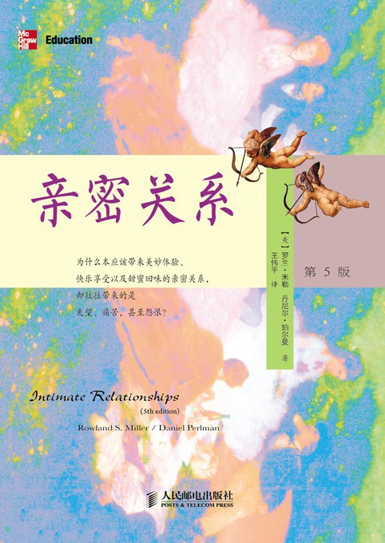

《亲密关系》

总体观点
美国萨姆休斯顿州立大学心理学教授罗兰·米勒的传世力作，是全球各大高校人际关系与社会心理学领域的金牌权威教材。
核心命题：亲密关系不是听天由命的情感神秘玄学，而是一门有着严谨演化生物学、依恋理论与社会认知实证支撑的心理科学。健康幸福的伴侣关系并非天然天生一对，而是靠科学的沟通技巧与持续的相互依赖行为修葺出来的。
本书破除了好莱坞童话式的浪漫爱情神话，为读者提供了审视相遇、相处、冲突、权力博弈直至白头偕老的理性指南针。
核心观点
-
1. 人类深嵌基因底层的归属需要决定了亲密关系是身心健康的必需品
高质量亲密关系能显著提升免疫力与预期寿命，而长期孤独与社交隔离对健康的伤害堪比吸烟与严重肥胖。
医学追踪研究表明，缺乏稳定社会支持与亲密伴侣的心脏病康复患者，在出院六个月内的死亡率是有亲密伴侣患者的三倍以上。 -
2. 童年依恋类型深刻塑造了成年后在爱情中的安全感与互动防御模式
安全型更敢于信任与袒露脆弱，痴迷型过度焦虑担忧被抛弃，而回避型则在伴侣靠近时本能感到窒息想要逃跑。
面对伴侣迟回短信，安全型会默认对方在忙工作，痴迷型会连环夺命连环扣疯狂质疑对方变心，回避型则立刻关闭情绪自我冷战。 -
3. 吸引力遵循相似性与互惠原则，而非流行神话中的“互补相吸”
长久稳固的关系建立在价值观、社会背景、智力水平与生活节奏的高度相似上；性格互补只有在主导与服从等少数领域起效。
一个极度追求极简生活的人与一个狂热购物狂起初可能因新鲜感互相吸引，但同居半年后必然在消费观上爆发不可调和的日夜争吵。 -
4. 社会交换理论解释了人们对关系的满意度与去留决策的底层计算
人们根据期望水平（CL）评估满意度，根据替代选项水平（CLalt）决定是否分手；替代选项差的人哪怕身处糟糕关系也不会离开。
一位家庭主妇在婚姻中遭遇冷遇并不快乐，但因多年没有工作收入且缺乏经济独立能力（替代选项极其恶劣），依然选择隐忍维持婚姻。 -
5. 激情之爱终将衰退，能够经受岁月淬炼的是相伴之爱与承诺
多巴胺与苯乙胺驱动的激情迷恋通常在18至30个月内必然降温，长治久安的婚姻必须转向以亲密和承诺为核心的相伴之爱。
结婚二十年的模范夫妻早已不再每天心跳加速，但彼此拥有深厚的情感信任、共享回忆与对家庭共同体坚不可摧的承诺誓约。 -
6. 沟通中的“四骑士”行为是预测亲密关系破裂的头号警报器
戈特曼研究证实：批评（人身攻击）、蔑视（冷嘲热讽）、辩解（推卸责任）与冷战（拒绝交流）是摧毁关系的四种致命剧毒。
当争吵中出现翻白眼和冷嘲热讽（蔑视信号）时，研究表明这段婚姻在随后数年内的离婚预测准确率高达90%以上。 -
7. “最小兴趣原则”揭示了亲密关系内部隐秘权力倾斜的残酷法则
在关系中付出更少、对维持关系兴趣更低的一方，由于离开成本更低，天然在日常决策与博弈中握有压倒性的支配特权。
更不在乎是否分手的一方，在度假地点选择、买房决策甚至日常饭局安排上，往往拥有最终拍板权，另一方则不断妥协讨好。 -
8. “积极错觉”与共同参与新奇冒险是长久维系热情的有效科学防腐剂
幸福伴侣倾向于用玫瑰色眼镜看待对方的小缺点，并定期共同体验从未尝试过的挑战性活动以重新激活多巴胺神经回路。
老夫老妻每年定期一起去陌生国家自驾露营徒步，面对未知路况共同解决困难，重新体验恋爱初期的并肩作战与心动感觉。
全书结构
-
第一至二章：人际关系的构成与科学研究方法
奠定亲密关系心理学理论基石，确立安全型、回避型与焦虑型依恋分类，揭示演化心理学与社会文化变迁的深层影响。
童年获得稳定回应的孩子形成安全型依恋，成年后更信任伴侣；而经常遭遇忽视的孩子形成回避型，亲密接触会诱发其强烈的逃避防御。 -
第三至四章：吸引力法则与社会认知偏差
解构人际吸引的物理外貌与相似性原则，剖析初识阶段的美化偏见、首因效应与自我实现的自我应验预言。
“漂亮即良好”的刻板印象让人们潜意识认为外貌出众者性格也更好，我们在接触中给予其更多微笑，反向诱导其表现得更加友善温和。 -
第五至六章：沟通互动与相互依赖的社会交换
剖析非语言身体线索与自我表露的层级，运用社会交换理论评估结果、比较水平（CL）与替代选项（CLalt）对关系满意度的决定作用。
一个人即便对当前伴侣挑剔抱怨（结果低于期望CL），但如果环顾周围发现没有更好的单身选择（替代选项CLalt更低），依然会稳定维持这段关系。 -
第七至九章：友谊、爱情的三元论与性爱心理
深入斯滕伯格爱情三元论（亲密、激情、承诺）的演变周期，探讨纯真友谊的心理抚慰与两性亲密行为的深层心理机制。
轰轰烈烈的激情之爱往往在相处18至30个月内多巴胺衰退而降温，长期幸福的婚姻必须由激情之爱平稳转变为富含承诺与亲密的“相伴之爱”。 -
第十至十二章：关系的暗面：压力、冲突、权力和背叛
直面亲密关系中的排斥冷战、嫉妒吃醋与背叛创伤，剖析最小兴趣原则赋予冷漠者的权杖以及冲突升级的恶性螺旋。
“最小兴趣原则”表明：在关系中付出更少、更无所谓分手的一方，在家庭日常决策中握有支配性的实际权力，容易引发权力失衡。 -
第十三至十四章：关系的解体、维持与科学修复处方
分析离婚解体的风险预测模型，给出积极错觉、宽恕练习、共同参与新奇活动与心理治疗等经过实证检验的关系维系方案。
长期维持高满意度的伴侣倾向于保留“积极错觉”——在心理上将伴侣的缺点重新解释为可爱之处，同时定期共同挑战全新户外运动持续激活多巴胺。